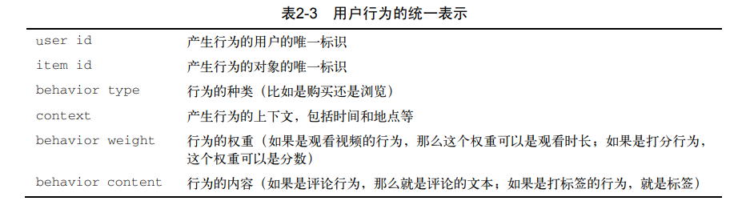
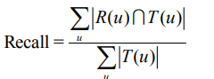
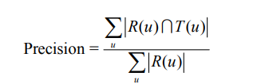

⚠ All man’s success is no accident.
Step Three: enviroment – python3.7
基于用户的协同过滤算法
昨天晚上有点跑偏，研究了一会pandas和numpy，也写了好几个小demo。今天开始再次阅读项亮老师的书，直接从第二章利用用户行为数据开始：
通过观看，在图表2-3发现，本书中关于用户行为的统一表述

常用的数据分析的数据集
Delicious
CiteULike
Netflix (数据有过浅层次处理，没有过于稀疏的数据)
MovieLens (数据有过浅层次处理，没有过于稀疏的数据)
对用户u推荐N个物品（记为R(u)），令用户u在测试集上喜欢的物品集合为T(u)，然后可以通
过准确率/召回率评测推荐算法的精度：
召回率

准确率

公式中 | 的意思不是绝对值，而是集合的基数(也就是集合中元素的个数)，维基百科的解释是：
1 | cardinality: {\displaystyle |S|} |S|, read "the cardinality of the set S" |
信息熵
在信息论中，熵（英语：entropy）是接收的每条消息中包含的信息的平均量，又被称为信息熵、信源熵、平均自信息量。这里，“消息”代表来自分布或数据流中的事件、样本或特征。（熵最好理解为不确定性的量度而不是确定性的量度，因为越随机的信源的熵越大。）来自信源的另一个特征是样本的概率分布。这里的想法是，比较不可能发生的事情，当它发生了，会提供更多的信息。由于一些其他的原因，把信息（熵）定义为概率分布的对数的相反数是有道理的。事件的概率分布和每个事件的信息量构成了一个随机变量，这个随机变量的均值（即期望）就是这个分布产生的信息量的平均值（即熵）。熵的单位通常为比特，但也用Sh、nat、Hart计量，取决于定义用到对数的底。
采用概率分布的对数作为信息的量度的原因是其可加性。例如，投掷一次硬币提供了1 Sh的信息，而掷m次就为m位。更一般地，你需要用log2(n)位来表示一个可以取n个值的变量。
基于物品的协同过滤算法
内容类似基于用户 ，userCF 和 itemCF
隐语义模型
最优控制(optimal control)与最优化(optimization)
最优控制（optimal control）可以理解为最优化（optimization）领域下的一个子领域。最优化理论一般研究涉及最优化问题的建模与求解。一个最优化模型一般包括目标函数，决策变量，以及约束条件这三个基本要素。最优化问题的目标是选择一组满足约束条件决策变量，使得目标函数最优（如最小化成本，或最大化收益）。常见的问题包括线性规划，整数规划等。最优化控制问题可视为最优化问题中的一种，该类问题主要针对控制系统进行优化。系统有特定的状态（state），以及相应的控制器（controller），该类问题的目标一般也是选取最优的控制策略（control policy，即告诉我们在什么状态下进行什么样的行动），以使得系统最优（可以是成本最小，也可以是收益最大）。以库存控制问题为例，可将当前库存量视为系统状态，决策变量即为订货量，最优的策略即为在什么样的库存量下，订多少货，使得总体的库存持有成本最低。上述库存问题，同样可以建立成一个数学规划的模型（目标函数，决策变量，约束）。最优化控制理论根据问题的特点，又可细分为确定型最优化理论（deterministic）与随机型最优化理论（stochastic），
根据系统输入输出之间的关系又可分为:线性最优化控制理论（linear）与非线性最优化控制理论（nonlinear）。不同的问题因为其特点不同，也会对应不同的方法，这些就难以一一列举了。
鲁棒性/健壮性 Robustness
指系统在扰动或不确定的情况下仍能保持它们的特征行为。
鲁棒决策，一种尽可能对不确定性免疫，并在作出后相当长时间仍看上去不错的决策。
鲁棒统计，一种在其假定被数据产生在的真实模型所违背的情况下依然能工作良好的统计技术。
（英语：Robustness）是指一个计算机系统在执行过程中处理错误，以及算法在遭遇输入、运算等异常时继续正常运行的能力。 诸如模糊测试之类的形式化方法中，必须通过制造错误的或不可预期的输入来验证程序的健壮性。很多商业产品都可用来测试软件系统的健壮性。健壮性也是失效评定分析中的一个方面。
结构风险函数/经验风险函数
损失函数/目标函数/代价函数
损失函数（loss function）是用来估量你模型的预测值f(x)与真实值Y的不一致程度，它是一个非负实值函数,通常使用L(Y, f(x))来表示，损失函数越小，模型的鲁棒性就越好。损失函数是经验风险函数的核心部分，也是结构风险函数重要组成部分
过拟合
在统计学中，过拟合（英语：overfitting，或称过度拟合）现象是指在拟合一个统计模型时，使用过多参数。
对比于可获取的数据总量来说，一个荒谬的模型只要足够复杂，是可以完美地适应数据。过拟合一般可以视为违反奥卡姆剃刀原则。
当可选择的参数的自由度超过数据所包含信息内容时，这会导致最后（拟合后）模型使用任意的参数，这会减少或破坏模型一般化的能力更甚于适应数据。过拟合的可能性不只取决于参数个数和数据，也跟模型架构与数据的一致性有关。此外对比于数据中预期的噪声或错误数量，跟模型错误的数量也有关。
过拟合现象的观念对机器学习也是很重要的。通常一个学习算法是借由训练示例来训练的。亦即预期结果的示例是可知的。而学习者则被认为须达到可以预测出其它示例的正确的结果，因此，应适用于一般化的情况而非只是训练时所使用的现有数据（根据它的归纳偏向）。然而，学习者却会去适应训练数据中太特化但又随机的特征，特别是在当学习过程太久或示例太少时。在过拟合的过程中，当预测训练示例结果的表现增加时，应用在未知数据的表现则变更差。
在统计和机器学习中，为了避免过拟合现象，须要使用额外的技巧（如交叉验证、提早停止、贝斯信息量准则、赤池信息量准则或模型比较），以指出何时会有更多训练而没有导致更好的一般化。人工神经网上的过拟合过程亦被认知为过度训练（英语：overtraining）。在treatmeant learning中，使用最小最佳支持值（英语：minimum best support value）来避免过拟合。
相对于过拟合是指，使用过多参数，以致太适应数据而非一般情况，另一种常见的现象是使用太少参数，以致于不适应数据，这则称为乏适（英语：underfitting，或称：拟合不足）现象。
过拟合就是说模型在训练数据上的效果远远好于在测试集上的性能。
LFM和基于邻域的方法的比较
LFM是一种基于机器学习的方法，具有比较好的理论基础。这个方法和基于邻域的方法（比
如UserCF、ItemCF）相比，各有优缺点。下面将从不同的方面对比LFM和基于邻域的方法。
- 理论基础 LFM具有比较好的理论基础，它是一种学习方法，通过优化一个设定的指标
建立最优的模型。基于邻域的方法更多的是一种基于统计的方法，并没有学习过程。 - 离线计算的空间复杂度 基于邻域的方法需要维护一张离线的相关表。在离线计算相关
表的过程中，如果用户/物品数很多，将会占据很大的内存。假设有M个用户和N个物品，
在计算相关表的过程中，我们可能会获得一张比较稠密的临时相关表（尽管最终我们对
每个物品只保留K个最相关的物品，但在中间计算过程中稠密的相关表是不可避免的），
那么假设是用户相关表，则需要O(MM)的空间，而对于物品相关表，则需要O(NN)的空
间。而LFM在建模过程中，如果是F个隐类，那么它需要的存储空间是O(F*(M+N))，这在
M和N很大时可以很好地节省离线计算的内存。在Netflix Prize中，因为用户数很庞大
（40多万），很少有人使用UserCF算法（据说需要30 GB左右的内存），而LFM由于大量节
省了训练过程中的内存（只需要4 GB），从而成为Netflix Prize中最流行的算法。 - 离线计算的时间复杂度 假设有M个用户、N个物品、K条用户对物品的行为记录。那么，
UserCF计算用户相关表的时间复杂度是O(N (K/N)^2)，而ItemCF计算物品相关表的时间
复杂度是O(M(K/M)^2)。而对于LFM，如果用F个隐类，迭代S次，那么它的计算复杂度
是O(K F S)。那么，如果K/N > FS，则代表UserCF的时间复杂度低于LFM，如果
K/M>FS，则说明ItemCF的时间复杂度低于LFM。在一般情况下，LFM的时间复杂度要
稍微高于UserCF和ItemCF，这主要是因为该算法需要多次迭代。但总体上，这两种算法
在时间复杂度上没有质的差别。 - 在线实时推荐 UserCF和ItemCF在线服务算法需要将相关表缓存在内存中，然后可以在
线进行实时的预测。以ItemCF算法为例，一旦用户喜欢了新的物品，就可以通过查询内
存中的相关表将和该物品相似的其他物品推荐给用户。因此，一旦用户有了新的行为，
而且该行为被实时地记录到后台的数据库系统中，他的推荐列表就会发生变化。而从LFM
的预测公式可以看到，LFM在给用户生成推荐列表时，需要计算用户对所有物品的兴趣
权重，然后排名，返回权重最大的N个物品。那么，在物品数很多时，这一过程的时间
复杂度非常高，可达O(MNF)。因此，LFM不太适合用于物品数非常庞大的系统，如
果要用，我们也需要一个比较快的算法给用户先计算一个比较小的候选列表，然后再用
LFM重新排名。另一方面，LFM在生成一个用户推荐列表时速度太慢，因此不能在线实
时计算，而需要离线将所有用户的推荐结果事先计算好存储在数据库中。因此，LFM不
能进行在线实时推荐，也就是说，当用户有了新的行为后，他的推荐列表不会发生变化。 - 推荐解释 ItemCF算法支持很好的推荐解释，它可以利用用户的历史行为解释推荐结果。
但LFM无法提供这样的解释，它计算出的隐类虽然在语义上确实代表了一类兴趣和物品，
却很难用自然语言描述并生成解释展现给用户。